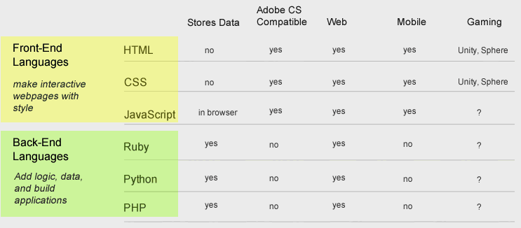

Kit Richert
PORTFOLIO: LEARNSTREET
PROJECT 1
Course Onboarding
- Project Overview
-
Project Overview
University Now's exams were multiple choice. Students needed to pass a "prefinal" before they would be allowed to schedule their final exam, which was scheduled with a 3rd party service called ProctorU. Students had two chances to pass the prefinal and the final. The goals of this exercise were to make exam results clear to students, and to include next steps.
Methods
- Gathered all legal and academic requirements for university enrollment
- Used persona-driven design to develop wireframes and interactions
- Went through approval with key stakeholders
- Paired with developers to implement the design
- WIREFRAMES: SCHEDULE YOUR FINAL
-
Wireframes: Schedule your final
- WIREFRAMES: EXAM NOT-PASS (TOP)
-
Exam Results: Student does not pass their final exam for the 1st time (top)
In this case they are offered next steps, and an breakdown of their score.
 - WIREFRAMES: EXAM NOT-PASS (BOTTOM)
-
Exam Results: Student does not pass their final exam for the 1st time (bottom)
At the bottom of the page, they are advised about how they may re-take the exam.
- WIREFRAMES: EXAM NOT-PASS (BOTTOM)
-
Exam Results: Student does not pass their final exam for the 2nd time (bottom)
At the bottom of the page, students are advised about how they may re-take the course.

- WIREFRAMES: EXAM PASS (TOP)
-
Exam Results: Student passes their final exam
In this case student are congratulated, and offered a breakdown of their score.

- WIREFRAMES: EXAM PASS (BOTTOM)
-
Exam Results: Student passes their final exam
At the bottom of the page, students are encouraged to share their results with their instructor.